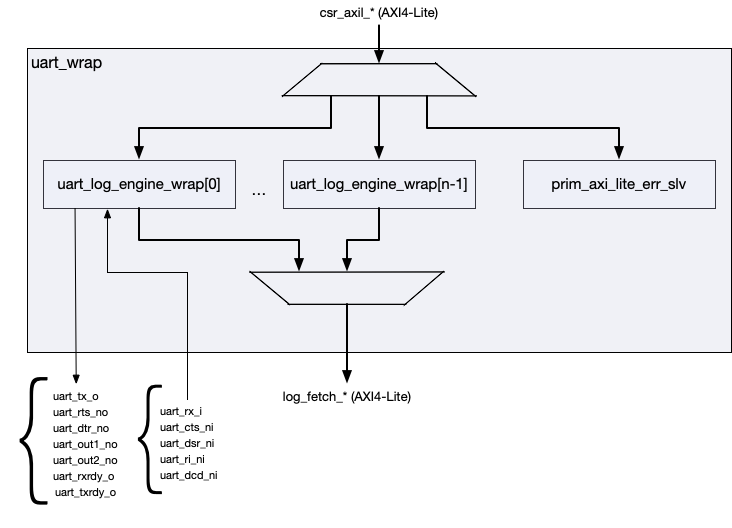

UART 16550
1. Overview
This document specifies the UART 16550 hardware Component functionality. The UART 16550 implements the National Semiconductor UART 16550 standard with additional enhancements including independently-configurable Transmitter and Receiver FIFO depths and FIFO data and pointer parity protection. It provides a full-featured serial communication interface compatible with industry-standard UART protocols.
2. Description and Features
-
Full UART 16550 compatibility and functionality
-
32-bit AXI4-Lite register interface
-
Independently-configurable Transmitter and Receiver FIFO depths (4 to 4096 entries)
-
FIFO parity protection for data and pointers with error reporting
-
Comprehensive interrupt support with 6 priority levels
-
Direct Memory Access (DMA) signaling with immediate and hysteresis modes
-
Modem control interface (CTS, DSR, RI, DCD, RTS, DTR, OUT1, OUT2) with change detection and interrupt; flow control is performed by software

SMC UART wrapper shows the SMC wrapper around the UART 16550.
3. Architecture
3.1. Overview
The UART 16550 IP uses a hierarchical architecture with three main layers: a top-level wrapper handling the register interface, the core UART logic with FIFO management, and the transmit/receive engines. This separation allows for clear division between interface, data flow, and serial processing.
3.2. Hierarchical Structure
Top Level (uart_16550)
The uart_16550 top-level module acts as an interface wrapper. It
manages AXI4-Lite transactions and register map routing, ensuring
protocol compliance and reliable integration.
UART Core (uart_core)
The uart_core module handles the main UART functions. It manages
transmit and receive FIFOs with configurable depths from 4 to 4096
entries, supporting diverse use cases from low-latency to
high-throughput. Baud rate generation uses 16x oversampling with a
programmable divisor for timing precision.
The interrupt controller handles six prioritized interrupt sources, and
modem control supports all standard modem signals. The modem interface is
status and control only - the inputs are synchronized and reported in the
MSR register with change detection and an interrupt, and the outputs are
driven directly from the MCR register. No modem signal gates the
transmit or receive datapath, so hardware flow control, if needed, is
implemented by software on top of these registers. DMA is supported in
both immediate and hysteresis modes for efficient data transfers. Both
internal and external loopback modes are supported for testing and
diagnostics.
The core works together with the transmit engine (serialization), receive engine (deserialization), FIFO controllers for buffering, and timeout detection logic, providing a balance of performance and reliability.
Transmit Engine (uart_tx)
The uart_tx module serializes parallel data for transmission,
maintaining timing accuracy and signal integrity. It generates frames
with selectable start, parity, and stop bits to match protocol
requirements and legacy compatibility. Baud rate alignment uses 16x
oversampling for precise timing. It also supports break signal generation
for protocol control or device reset. The engine has no modem inputs and
transmits whenever the TX FIFO is non-empty; it does not stall on CTS.
Receive Engine (uart_rx)
The uart_rx module deserializes incoming data, maintaining integrity
and providing error detection. It detects start bits, validates stop
bits, and checks parity where enabled, reporting errors for diagnostic
use. Error detection covers framing errors, parity errors, and break
conditions. Sampling uses 16x oversampling with majority voting for
noise immunity. Timeout detection flags when reception exceeds 4
character periods.
3.4. Transmit Data Flow
-
CPU Write: Software writes data to THR or FIFO
-
FIFO Buffering: Data goes into transmit FIFO
-
Serialization: Transmit engine converts to serial
-
Output: Data is sent via
tx_o
3.5. Receive Data Flow
-
Input Sampling: Receive engine samples
rx_iat 16x baud rate -
Frame Processing: Detects start bit, extracts data, checks parity and stop bit
-
FIFO Storage: Stores valid data in receive FIFO with error flags
-
CPU Read: Software reads data from RBR or FIFO
When DLAB (Divisor Latch Access Bit) = 0: - Address 0x0: RBR (read), THR (write) - Address 0x4: IER - Standard UART 16550 register layout is active
3.6. Divisor Latch Access Mode
When DLAB = 1: - Address 0x0: DLL (Divisor Latch Low) - Address 0x4: DLM (Divisor Latch High) - Used for baud rate divisor programming
3.7. Clock Domain Considerations
UART 16550 operates in a single system clock domain (clk_i), with all
external asynchronous inputs synchronized to prevent metastability. This
simplifies integration and maintains reliable timing.
Modem control inputs (CTS, DSR, RI, DCD) are synchronized to avoid errors. Serial input sampling uses 16x oversampling and majority voting, which also helps with synchronization. Reset is asserted asynchronously for immediate response but deasserts synchronously for safe recovery and predictable operation.
3.8. Error Handling Architecture
The design includes thorough error detection and reporting:
3.9. FIFO Parity Protection
FIFO parity protection covers stored data and pointers, detecting single-bit errors and maintaining integrity in FIFO control structures. Errors generate interrupts and error outputs for quick response by system software.
3.10. Serial Communication Errors
UART Serial Communication Errors lists the serial errors detected by the UART.
| Error Type | Description |
|---|---|
Framing Errors |
Detection of invalid stop bits |
Parity Errors |
Validation of received parity bits (when enabled) |
Overrun Errors |
Detection of FIFO overflow conditions |
Break Detection |
Recognition of extended low periods indicating break signals |
4. Interface
4.1. Configuration Parameters
The UART 16550 module provides configurable parameters to customize FIFO sizes according to system requirements.
The parameters and ports of uart_16550 are listed in uart_16550.
4.2. Modem Control Interface
The modem control interface provides full RS-232 modem signaling compatibility. All modem signals are active low at the pins, matching the RS-232 convention.
The modem inputs are status only. Each one is synchronized and then
reported in the MSR register in the opposite polarity (a bit reads 1
while its pin is asserted low), and a change on any of them raises the
Modem Status Interrupt. None of them gates the datapath: this component
implements no automatic flow control, so software must act on the
interrupt to throttle traffic. See the Programming section.
4.3. DMA Interface
The DMA interface provides signals for Direct Memory Access controllers to manage data transfers automatically.
4.5. Clock Domain
All interface signals operate in a single clock domain referenced to
clk_i. The following timing considerations apply:
-
AXI4-Lite Protocol: All AXI4-Lite signals must meet setup and hold time requirements relative to
clk_i -
Asynchronous Inputs:
rx_iand modem control inputs (cts_ni,dsr_ni,ri_ni,dcd_ni) are asynchronous and are synchronized internally -
Reset Requirements:
rst_nishould be asserted asynchronously and deasserted synchronously relative toclk_i
4.6. Serial Interface Timing
-
Baud Rate: Serial data rate is determined by the divisor latch registers (DLL/DLM) and uses 16x oversampling
-
Maximum Baud Rate: Limited to
system_clock_frequency / 32- a divisor of0disables the transmitter and receiver, so the smallest usable divisor is1 -
Data Frame: Configurable start bit (always 1), 5-8 data bits, optional parity bit, 1-2 stop bits
4.7. Protocol Support
The interface supports standard UART communication protocols:
-
RS-232: Full modem control and serial data signaling
-
RS-485: Can be used with external transceivers (using RTS for direction control)
-
Industrial Protocols: Compatible with Modbus RTU and other industrial serial protocols
-
Debug Interfaces: Suitable for system debug and console applications
The comprehensive interface design ensures compatibility with a wide range of serial communication requirements while maintaining the flexibility needed for diverse embedded system applications.
5. Memory Map
5.1. Overview
The UART 16550 register map follows the industry-standard 16550 UART layout with additional extended registers. The register space spans 64 bytes (6-bit address) with 32-bit aligned registers. Register access behavior depends on the DLAB (Divisor Latch Access Bit) setting in the Line Control Register (LCR).
The register map uses a dynamic addressing scheme where certain register addresses map to different registers based on the DLAB bit setting, maintaining compatibility with the original 16550 UART while providing access to baud rate configuration registers.
5.2. Detailed Register Map
The first two register views apply when LCR.DLAB=0; read-only and write-only
aliases at the same offset are shown separately. The divisor-latch view applies
when LCR.DLAB=1.
UART 16550 Main Address Map
Contains the mode-independent registers and the read-only registers accessible only
when `DLAB = 0`.
Register List:
| Address | Name | Access | Description |
|---|---|---|---|
| 0x0 | RBR | R | Receiver Buffer Register |
| 0x4 | IER | RW | Interrupt Enable Register |
| 0x8 | IIR | R | Interrupt Identification Register |
| 0xC | LCR | RW | Line Control Register |
| 0x10 | MCR | RW | Modem Control Register |
| 0x14 | LSR | R | Line Status Register |
| 0x18 | MSR | R | Modem Status Register |
| 0x1C | SCR | RW | Scratch Register |
| 0x20 | ECR | RW | Extended Control Register |
| 0x24 | ITR | RW | Interrupt Test Register |
Register Details:
RBR
| Bits | Field | Access | Reset | Description |
|---|---|---|---|---|
| 31:8 | Reserved | - | - | Reserved |
| 7:0 | DATA | R | 0x0 | Received Data. Contains a received character. If FIFOs are enabled, this field points to the bottom of the RX FIFO. Otherwise, this field points to a single- byte Receiver Buffer Register. |
IER
| Bits | Field | Access | Reset | Description |
|---|---|---|---|---|
| 31:5 | Reserved | - | - | Reserved |
| 4 | EFEI | RW | 0x0 | Enable FIFO Error Interrupt. |
| 3 | EDSSI | RW | 0x0 | Enable (Delta Status of) Modem Status Interrupt. |
| 2 | ELSI | RW | 0x0 | Enable (Receiver) Line Status Interrupt. |
| 1 | ETBEI | RW | 0x0 | Enable Transmitter Buffer Empty (Transmitter Holding Register Empty) Interrupt. |
| 0 | ERBFI | RW | 0x0 | Enable Receiver Buffer Full (Received Data Ready) Interrupt. |
IIR
| Bits | Field | Access | Reset | Description |
|---|---|---|---|---|
| 31:8 | Reserved | - | - | Reserved |
| 7:6 | FIFOS_ENABLED | R | 0x0 | FIFOs Enabled: * `0x0` - FIFOs are disabled * `0x3` - FIFOs are enabled |
| 5:4 | Reserved | - | - | Reserved |
| 3:1 | INTERRUPT_ID | R | 0x0 | Interrupt ID: * `0x7` - FIFO Error Interrupt (priority 0) * `0x3` - Receiver Line Status Interrupt (priority 1) * `0x6` - Reception Timeout Interrupt (priority 2) * `0x2` - Received Data Ready Interrupt (priority 3) * `0x1` - Transmitter Holding Register Empty Interrupt (priority 4) * `0x0` - Modem Status Interrupt (priority 5) |
| 0 | INTERRUPT_PENDING | R | 0x1 | Interrupt Pending. Active-low. |
LCR
| Bits | Field | Access | Reset | Description |
|---|---|---|---|---|
| 31:8 | Reserved | - | - | Reserved |
| 7 | DLAB | RW | 0x0 | Divisor Latch Access Bit. If set, allows access to the `DLL` and `DLM` registers when accessing addresses `0x0` and `0x4`, respectively. If unset, allows access to the `THR`, `RBR`, and `IIR` registers. |
| 6 | SET_BREAK | RW | 0x0 | Set Break. If set, forces the `tx_o` output to `0` to cause a break condition on the receiving UART. |
| 5 | STICK_PARITY | RW | 0x0 | Stick Parity. If set, forces the transmit and received parity bits to be `0` if even parity is selected and `1` if odd parity is selected. |
| 4 | EPS | RW | 0x0 | Even Parity Select: * `1` - even parity * `0` - odd parity |
| 3 | PEN | RW | 0x0 | Parity Enable. |
| 2 | STB | RW | 0x0 | Stop Bits: * `0` - 1 stop bit. * `1` - 2 stop bits (or 1.5 stop bits if word length is set to 5 bits) |
| 1:0 | WLS | RW | 0x0 | Word Length Select: * `0x0` - 5 bits per character * `0x1` - 6 bits per character * `0x2` - 7 bits per character * `0x3` - 8 bits per character |
MCR
| Bits | Field | Access | Reset | Description |
|---|---|---|---|---|
| 31:6 | Reserved | - | - | Reserved |
| 5 | LINE_LOOPBACK | RW | 0x0 | Line Loopback. If set, the `rx_i` input is internally connected to the `tx_o` output. |
| 4 | LOOP | RW | 0x0 | System Loopback. If set, the transmitter is internally connected to the receiver. The `tx_o` output is set to `1`. |
| 3 | OUT2 | RW | 0x0 | User Output 2. Writing to this bit drives the `out2_no` in the opposite polarity. |
| 2 | OUT1 | RW | 0x0 | User Output 1. Writing to this bit drives the `out1_no` in the opposite polarity. |
| 1 | RTS | RW | 0x0 | Request to Send. Writing to this bit drives the `rts_no` output in the opposite polarity. |
| 0 | DTR | RW | 0x0 | Data Terminal Ready. Writing to this bit drives the `dtr_no` output in the opposite polarity. |
LSR
| Bits | Field | Access | Reset | Description |
|---|---|---|---|---|
| 31:8 | Reserved | - | - | Reserved |
| 7 | ERROR_IN_RCVR_FIFO | R | 0x0 | Error in Receiver FIFO. When set, indicates that the receiver FIFO or (RBR in non-FIFO mode) has the parity, framing, or break error. In other words, at least one of the PE, FE, and BI bits is set. |
| 6 | TEMT | R | 0x1 | Transmitter Empty. When set, indicates that the transmitter shift register and the transmitter FIFO (or THR in non-FIFO mode) are empty. |
| 5 | THRE | R | 0x1 | Transmitter Holding Register Empty. When set, indicates that the TX FIFO (or THR in non-FIFO mode) is empty. Clearing the Transmitter Holding Register Empty Interrupt does NOT clear this bit. |
| 4 | BI | R | 0x0 | Break Interrupt. When set, indicates that the `rx_i` input is `0` for an entire frame's time (start + data + parity + stop bits). In FIFO mode, this bit set when the character reaches the top of the receiver FIFO. In non-FIFO mode, this bit is set when the character enters the RBR. This bit triggers the Receiver Line Status Interrupt. |
| 3 | FE | R | 0x0 | Framing Error. When set, indicates that the received character is missing a stop bit. In FIFO mode, this bit is set when the character reaches the top of the FIFO. In non-FIFO mode, this bit is set when the character enters the RBR. This bit triggers the Receiver Line Status Interrupt. |
| 2 | PE | R | 0x0 | Parity Error. When set, indicates that the character at the top of the receiver FIFO (or RBR in non-FIFO mode) has a parity error. This bit triggers the Receiver Line Status Interrupt. |
| 1 | OE | R | 0x0 | Overrun Error. When set, indicates that the RX FIFO (or Receiver Buffer Register in Non-FIFO Mode) is full when new character is received. In FIFO Mode, the new character is dropped. In non-FIFO mode, the existing character in the RBR is overwritten. This bit triggers the Receiver Line Status Interrupt. |
| 0 | DR | R | 0x0 | Data Ready. When set, indicates that the RX FIFO (or RBR in non-FIFO mode) contains data. |
MSR
| Bits | Field | Access | Reset | Description |
|---|---|---|---|---|
| 31:8 | Reserved | - | - | Reserved |
| 7 | DCD | R | 0x0 | Data Carrier Detect. This bit reflects the `dcd_ni` input in the opposite polarity, so it reads `1` while a carrier is detected. |
| 6 | RI | R | 0x0 | Ring Indicator. This bit reflects the `ri_ni` input in the opposite polarity, so it reads `1` while the remote modem signals an incoming call. |
| 5 | DSR | R | 0x0 | Data Set Ready. This bit reflects the `dsr_ni` input in the opposite polarity, so it reads `1` while the remote modem is connected and ready. |
| 4 | CTS | R | 0x0 | Clear to Send. This bit reflects the `cts_ni` input in the opposite polarity, so it reads `1` while the remote device is ready to receive data. |
| 3 | DDCD | R | 0x0 | Delta Data Carrier Detect. When set, indicates that the `DCD` bit has changed since the last time this register was read. This bit triggers the Modem Status Interrupt. |
| 2 | TERI | R | 0x0 | Trailing Edge Ring Indicator. When set, indicates that the `RI` bit has changed from a `1` to a `0`. This bit triggers the Modem Status Interrupt. |
| 1 | DDSR | R | 0x0 | Delta Data Set Ready. When set, indicates that the `DSR` bit has changed since the last time this register was read. This bit triggers the Modem Status Interrupt. |
| 0 | DCTS | R | 0x0 | Delta Clear to Send. When set, indicates that the `CTS` bit has changed since the last time this register was read. This bit triggers the Modem Status Interrupt. |
SCR
| Bits | Field | Access | Reset | Description |
|---|---|---|---|---|
| 31:8 | Reserved | - | - | Reserved |
| 7:0 | SCR | RW | 0x0 | Scratch. Holds user data. |
ECR
| Bits | Field | Access | Reset | Description |
|---|---|---|---|---|
| 31:2 | Reserved | - | - | Reserved |
| 1:0 | RCVR_TRIGGER_MS2B | RW | 0x0 | Receiver FIFO Trigger Level Most Significant 2 Bits. To configure the least significant 2 bits, use the `FCR.RCVR_TRIGGER` register field. The configurations for the trigger levels are: * `0x0` - 1 character * `0x1` - 4 characters * `0x2` - 8 characters * `0x3` - 14 characters * `0x4` - 32 characters * `0x5` - 64 characters * `0x6` - 128 characters * `0x7` - 256 characters * `0x8` - 512 characters * `0x9` - 1024 characters * `0xA` - 2048 characters * `0xB` - 4096 characters |
ITR
| Bits | Field | Access | Reset | Description |
|---|---|---|---|---|
| 31:6 | Reserved | - | - | Reserved |
| 5 | TRTI | RW | 0x0 | Test Reception Timeout Interrupt. Writing a `1` forces the interrupt and writing `0` releases it. |
| 4 | TFEI | RW | 0x0 | Test FIFO Error Interrupt. Writing `1` forces the interrupt and writing `0` releases it. |
| 3 | TDSSI | RW | 0x0 | Test (Delta Status of) Modem Status Interrupt. Writing `1` forces the interrupt and writing `0` releases it. |
| 2 | TLSI | RW | 0x0 | Test (Receiver) Line Status Interrupt. Writing `1` forces the interrupt and writing `0` releases it. |
| 1 | TTBEI | RW | 0x0 | Test Transmitter Buffer Empty (Transmitter Holding Register Empty) Interrupt. Writing `1` forces the interrupt and writing `0` releases it. |
| 0 | TRBFI | RW | 0x0 | Test Receiver Buffer Full (Received Data Ready) Interrupt. Writing `1` forces the interrupt and writing `0` releases it. |
UART 16550 Main Write-Only Address Map
Contains the write-only registers accessible only when `LCR.DLAB = 0`.
Register List:
| Address | Name | Access | Description |
|---|---|---|---|
| 0x0 | THR | W | Transmitter Holding Register |
| 0x8 | FCR | W | FIFO Control Register |
Register Details:
THR
| Bits | Field | Access | Reset | Description |
|---|---|---|---|---|
| 31:8 | Reserved | - | - | Reserved |
| 7:0 | DATA | W | 0x0 | Transmit Data. Holds a character to be transmitted. If FIFOs are enabled, this field points to the top of the TX FIFO. Otherwise, this field points to a single-byte Transmitter Holding Register. |
FCR
| Bits | Field | Access | Reset | Description |
|---|---|---|---|---|
| 31:8 | Reserved | - | - | Reserved |
| 7:6 | RCVR_TRIGGER | W | 0x0 | Receiver FIFO Trigger Level (Least Significant 2 Bits). To configure the most significant 2 bits, use the `CTRL.RCVR_TRIGGER_MS2B` register field. The configurations for the trigger levels are: * `0x0` - 1 character * `0x1` - 4 characters * `0x2` - 8 characters * `0x3` - 14 characters * `0x4` - 32 characters * `0x5` - 64 characters * `0x6` - 128 characters * `0x7` - 256 characters * `0x8` - 512 characters * `0x9` - 1024 characters * `0xA` - 2048 characters * `0xB` - 4096 characters |
| 5:4 | Reserved | - | - | Reserved |
| 3 | DMA_MODE_SELECT | W | 0x0 | DMA mode select: * `0` - DMA Mode 0 * `1` - DMA Mode 1 |
| 2 | XMIT_FIFO_RESET | W | 0x0 | Transmitter FIFO Reset. Writing `1` clears the TX FIFO. |
| 1 | RCVR_FIFO_RESET | W | 0x0 | Receiver FIFO Reset. Writing `1` clears the RX FIFO. |
| 0 | FIFO_ENABLE | W | 0x0 | FIFO Enable. When set, enables the TX and RX FIFOs (FIFO Mode). When unset, disables the FIFOs (Non-FIFO Mode). |
UART 16550 Divisor Latch Address Map
Contains the registers accessible only when `LCR.DLAB = 1`.
Register List:
| Address | Name | Access | Description |
|---|---|---|---|
| 0x0 | DLL | RW | Divisor Latch Least Significant Byte Register |
| 0x4 | DLM | RW | Divisor Latch Most Significant Byte Register |
Register Details:
DLL
| Bits | Field | Access | Reset | Description |
|---|---|---|---|---|
| 31:8 | Reserved | - | - | Reserved |
| 7:0 | DLL | RW | 0x0 | Divisor Latch Least Significant Byte. Baud rate is calculated as `baud_rate = system_clock_frequency / (16 * (divisor + 1))`. When the divisor is set to `0`, the transmitter and receiver logic are disabled. |
DLM
| Bits | Field | Access | Reset | Description |
|---|---|---|---|---|
| 31:8 | Reserved | - | - | Reserved |
| 7:0 | DLM | RW | 0x0 | Divisor Latch Most Significant Byte. Baud rate is calculated as `baud_rate = system_clock_frequency / (16 * (divisor + 1))`. When the divisor is set to `0`, the transmitter and receiver logic are disabled. |
6. Programming
6.1. Baud Rate Configuration
To configure the baud rate:
-
Set DLAB=1 in LCR register (0x0C)
-
Calculate divisor:
divisor = round(clock_frequency / (16 * desired_baud_rate)) - 1 -
Write low byte of divisor to DLL (0x00)
-
Write high byte of divisor to DLM (0x04)
-
Clear DLAB=0 in LCR register to resume normal operation
The baud rate generator reloads with divisor and ticks at zero, so the
resulting rate is clock_frequency / (16 * (divisor + 1)). A divisor of 0
disables the transmitter and receiver.
Example for 115200 baud with 50MHz clock:
divisor = round(50000000 / (16 * 115200)) - 1 = 26 (0x001A) - Write 0x1A to
DLL - Write 0x00 to DLM
6.2. FIFO Configuration
To enable and configure FIFOs:
-
Write to FCR register (0x08): Set FIFOEN=1
-
Configure receive trigger level in RXTRIG field
-
Reset FIFOs if needed using RFIFORST and TFIFORST bits
-
Select DMA mode if using DMA transfers
6.3. Interrupt Configuration
To configure interrupts:
-
Enable desired interrupt sources in IER register (0x04)
-
Configure OUT2 in MCR register if needed for interrupt enable
-
Read IIR register (0x08) to identify pending interrupts
-
Service interrupts by reading appropriate status/data registers
6.4. Modem Status and Flow Control
The component does not implement automatic flow control. The cts_ni,
dsr_ni, ri_ni and dcd_ni inputs are synchronized and reported in the
MSR register only - the transmitter keeps sending while the TX FIFO is
non-empty regardless of CTS, and the receiver never deasserts rts_no on
its own. Any flow control protocol must therefore be driven by software.
To use CTS-based flow control on the transmit side:
-
Enable the Modem Status Interrupt by setting EDSSI=1 in IER (0x04)
-
On an interrupt, read IIR (0x08) to confirm the Modem Status source
-
Read MSR (0x18).
MSR.CTSreads1whilects_niis asserted (low), that is, while the remote device can accept data.MSR.DCTSindicates CTS changed since the previous MSR read -
Stop writing THR while
MSR.CTSreads0, and resume when the next Modem Status Interrupt reports it back at1
The four delta bits (DCTS, DDSR, TERI, DDCD) are sticky and are cleared by any read of MSR, including a read that only intended to sample one of them. A single read must therefore be used to capture the state of every modem input. Because they are sticky, a change is still reported even if the input returns to its previous level before software gets to the read - the delta bit records that something moved, while the level bits only show where the input ended up.
On the receive side, software throttles the remote device by clearing
MCR.RTS (which drives rts_no high, deasserted) when the RX FIFO
approaches its trigger level, and setting it again after draining RBR.
Both loopback modes bypass the pins, so the MSR level bits no longer reflect
the modem inputs. With MCR.LOOP set, MSR is fed internally from the MCR
bits (CTS from RTS, DSR from DTR, RI from OUT1, DCD from OUT2) and the modem
outputs are deasserted. With MCR.LINE_LOOPBACK set, the modem inputs are
routed straight back out to the modem outputs and all four MSR level bits
read 0. If both bits are set at once the two paths resolve priority
differently: the modem outputs follow line loopback, while MSR follows system
loopback. Delta bits and the Modem Status Interrupt track whatever values are
substituted.
The memory map provides comprehensive control over all UART 16550 functions while maintaining backward compatibility with the original 16550 standard. The dynamic register mapping through DLAB provides efficient access to both normal operation and baud rate configuration registers.